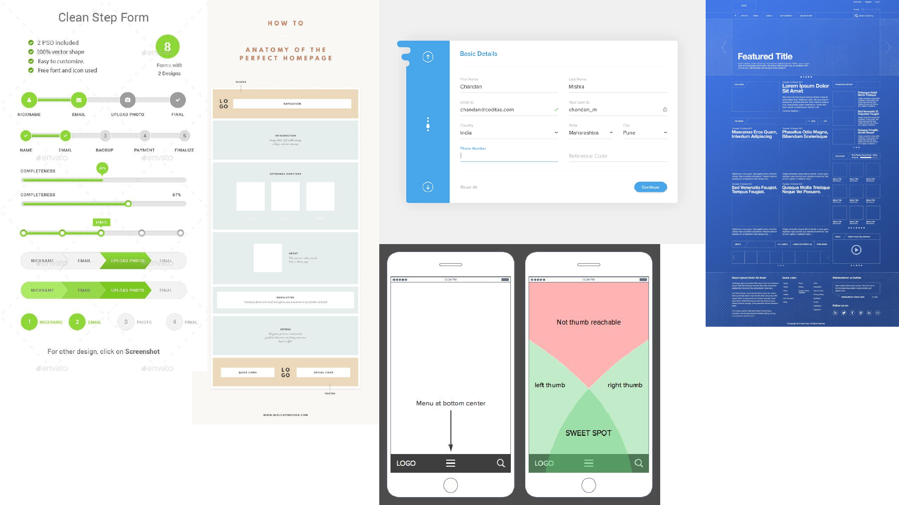
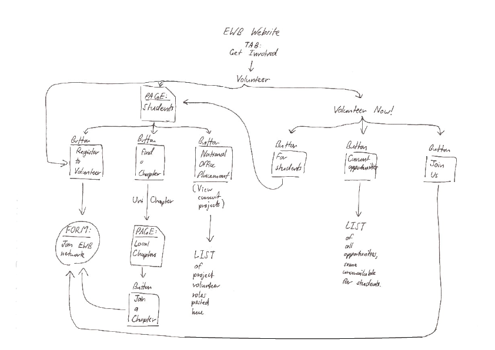
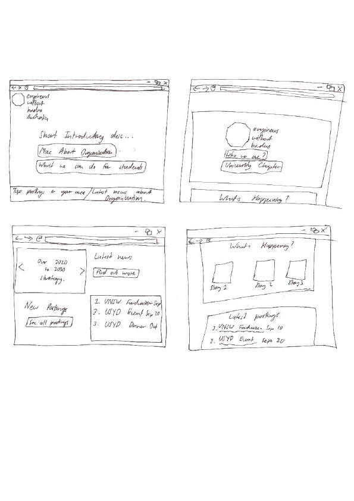
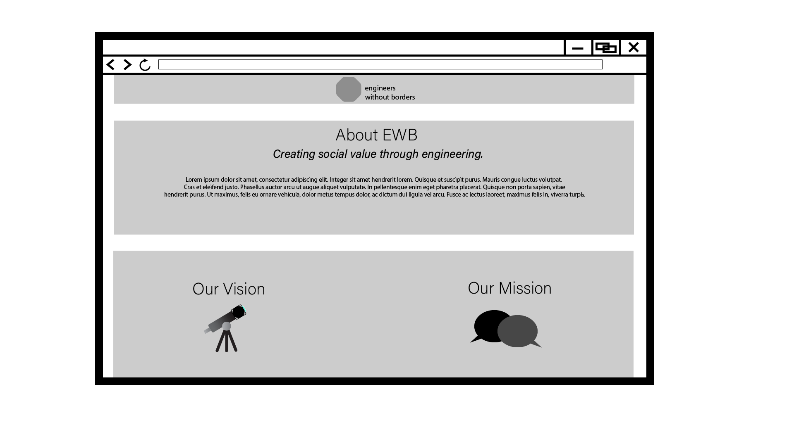
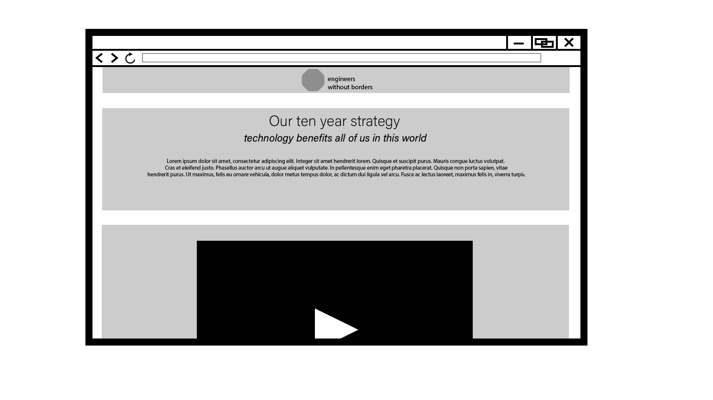
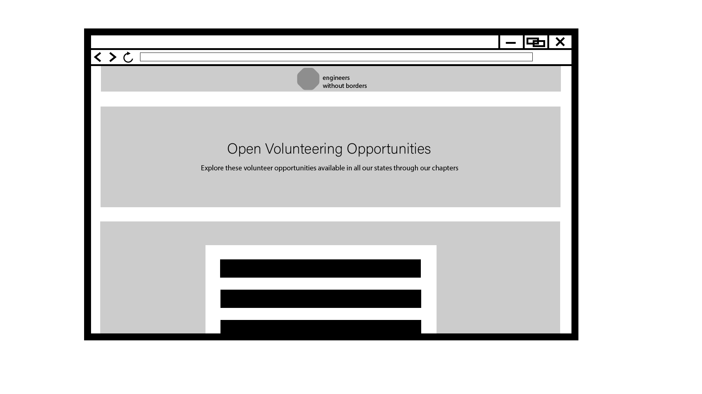
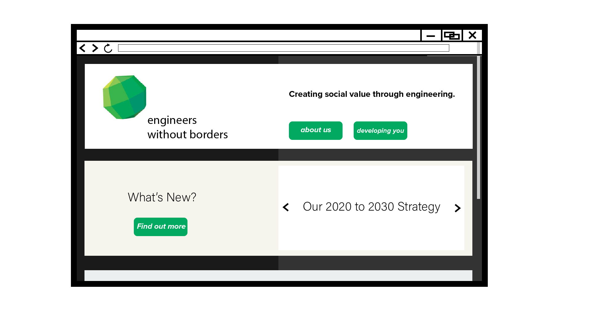
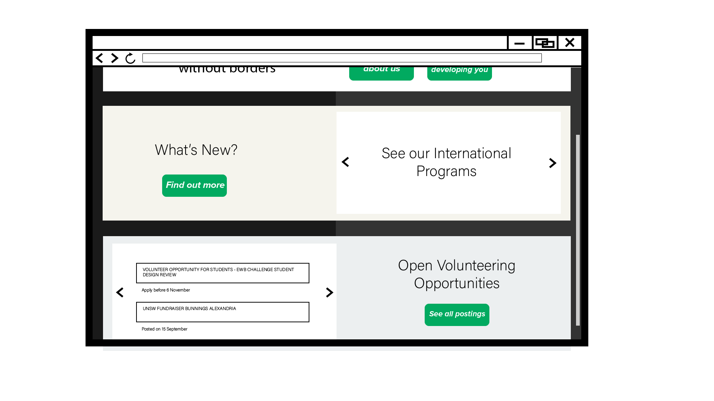

Background
This research was done through exploring the Engineers without Borders website (EWB) and facebook pages, as well as based on my own experience as an engineering student during 2018 - 2019. I have been involved in fundraisers related to EWB and development programs. Informal interviews were also conducted with my peers who are currently studying engineering.
Research
Many engineering students learn about EWB seeking to improve their resume through involvement in extra-curriculars. Remarkably, many of them develop a sincere admiration for EWBs efforts in working towards a sustainable future for engineers and continue their involvement with the organisation. This seems to stem from a busy workload that engineering students go through, to which finding valued output, an ethical goal once they reach the workplace becomes an outcome they chase after - a motivating factor. Diving deep into the maths and sciences can be difficult to remain strong at a high academic level year after year for many students without external motivating factors. EWB reminds students of their ‘why’ and for some of them provides a new meaning behind their engineering degree.
However, some students are not as aware as others, and will hear the term ‘engineering without borders’ and seek interest as it is common to hear among students and in networking events.
Many students want to improve their skills as an engineer and become more professional, and they view EWB as an opportunity to do that. Others enjoy the process and want to become a more reputable and varied person. They want to improve their soft skills, and they find that signing up for as many programs and networking events helps improve their skills.
In most visits, students will spend little time on the website. Many of the events are advertised through societies on facebook, and Instagram, as well as on campus.
User Profiles
1. Coasting Academic
Motivation behind extra-curriculars: Enjoyment in partaking in these events. There is a social factor, and they often find that they perform as well or even better academically when attending these programs. This user tends to be extroverted, and finds fulfillment in making connections, and seeing engineering in practice outside university. Improving their resume and employability, although important to them, isn’t a dire need.
Needs: This user is aware of how events work, and simply needs to be aware of the latest posting or event available near them so that they can attend them at a convenient basis.
Requirements: A list of postings and opportunities for the short future is a good idea. These could be organised in the form of a calender, or organised based on category or ‘chapters’.
2. Fledgling First-year
New to the scene when it comes to extra-curriculars, this user is curious about EBW and similar organisations due to discussion amongst peers. This user understands that participation holds some significance and does not want to be left behind.
Needs: This user needs the most assistance in terms of what kind of activities are available how to get involved, when the next event is happening amongst other information. They would require introductory information and does not have an account with EWB.
Requirements: A simple, straightforward introduction to what EWB is, and the benefits that pertain specifically to Engineering students. This would inform this user of what the buzz is about when it comes to extra-curriculars, how to get started. This could be an introductory landing page which defines EWB in a way that students understand its significance to them, or a layout which is easy to navigate and answers each question the user would have in a sequential order.
3. Resume Rookie
In the middle of their degree, this user is hunting for opportunities to improve their resume, partaking in any fundraisers, networking events and workshops to improve their skills. They also find it liberating to take part in these events, as it provides some perspective on a life after university, and views the work of engineering through a lens of serving the wider community and the world, instead of looking through a textbook all day.
Needs: Similar to user 1, this user would like to remain updated on the latest events. However, they are more specific towards improving their resume and employability, and are looking for any means to do that.
Requirements: Pages specific to improving employability. Events more tailored towards improving soft skills as opposed to ‘hangouts’ can be sold to these users.
This is a blockquote which you can use for user quotes or just to highlight key pieces of information.
Ideation
Mood Boards
A few images focused around simple layouts and form types were organised for inspiration. Achieving the few requirements of the users is the main goal
Sketches
The structure for the site needs to accommodate the needs of each type of user. The user profiles can be classified in a way similar to a ‘Beginner, Intermediate and Advanced’ type of user depending on how much the user knew what they wanted. User 2 would need guidance and education, whereas Users 1 and 3 would need to be shown their opportunities as soon as possible.
The sitemap of the current EWB site was considered, particularly the navigation that users would use when trying to find new postings or information relevant to university students, as this is the navigation the three users would use. Many pathways led to the same outcome at the registration form. For students that are already registered, they would be redirected to their account where they can find relevant postings. Introductory information could be found for user 2 through the 'About' tab.
Seeing these navigations, the iterations that follow are based on achieving the requirements for the three user types in the most efficient way – with as little navigation as possible to get the information that they need. The landing page iterations reflect this, presenting the information any of the three student users may want to know upfront, and further details if they require it. This is because students tend to not spend too much time on the site. Many times information is relayed to them through engineering and other societies in social media.
As shown above, each landing page iteration aims to provide all three users types with what they are looking for - introductory information, or job postings. In the screen on the lower left, users are able to immediately recieve some of their needs and given the option for more details if need be. Getting a glimpse of each need for the users ensures a suitable landing page for all users, and so this iteration prcoeeds to the next stage.
Designs
Soluta quibusdam ad nostrum vel voluptate delectus sequi dolores quia quaerat officia corrupti, aperiam fugit facere debitis repudiandae praesentium sapiente inventore repellendus, nemo commodi alias!
Wireframes
Below are the wireframes for the landing page
It is clearer here that all three user types are able to fulfil some of their needs to a degree. Wireframes for pages once the buttons are clicked are shown below
  Mockups
Mockups were made of the landing page as it is the primary outcome of the research in this web proposal
 The mockups detail the individual postings which are visible straight from the landing page, which will catch the eyes of Users 1 and 3. User 2 will immediately see the introduction to EWB, and the benefits they offer to partaking students. The what's new section provides nw information about the NGO to users 1 and 3, who admire the organisation, and curious about its next steps. The section transitions between a few of the main headlines so these users can see if there is anything of particular interest to them
References
ApexTheme (2015, July 27). “Clean Step Form”. GraphicRiver. Retrieved from: https://graphicriver.net/item/step-forms/12262830?irgwc=1&clickid=0yhRnFxOSxyLTS0wUx0Mo3kTUkE2yowQZ0VGXs0&iradid=275988&irpid=1290430&iradtype=ONLINE_TRACKING_LINK&irmptype=mediapartner&mp_value1=&utm_campaign=af_impact_radius_1290430&utm_medium=affiliate&utm_source=impact_radius.
Clark, D (2012, October 23). “Blueprint/Wireframe”. Dribbble. Retrieved from: https://dribbble.com/shots/782399-Blueprint-Wireframe.
Correale, G (2019, February 23). “How To | Anatomy of the Perfect Homepage”. Miel Café Design. Retrieved from: https://www.mielcafedesign.com/blog/anatomy-of-the-perfect-homepage/.
Hannon, C (2020). “Web Trends 2020”. Roundpeg. Retrieved from: https://roundpeg.biz/2019/11/web-trends-2020/.
Mishra, C (2016, October 8). “FREE – Material Registration Form UI”. Dribbble. Retrieved from: https://dribbble.com/shots/3012657-FREE-Material-Registration-Form-UI.
“Engineers Without Borders Australia Logo,” 2018. Engineers Without Borders Australia. Retrieved from: https://www.ewb.org.au.